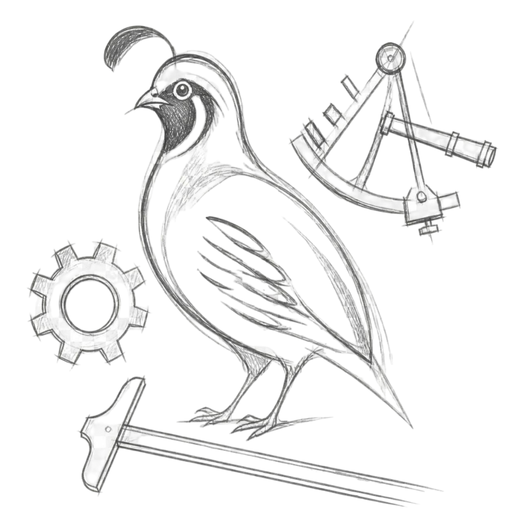

Installation
Step-by-step guide: Download | Test | Install

Install BcalcOS Linux
BcalcOS 1.0 (bobwhite) is an ALPHA release.
***RECOMMEND INSTALLATION ON A VIRTUAL OR SECONDARY MACHINE.***
Confirm your computer specs meet the minimum requirements:
64-bit x86 CPU | 4 GB RAM | 80 GB Disk
Back up your data before installing!
Download
One ISO
Write
USB stick
Boot
Live boot
Test
Look around
Install
Your distribution
Download
Bootable disk image.
BcalcOS is available in one configuration with one ISO.
Click to download the ISO and the checksum.
Compare the checksum values to verify the download is intact and unmodified.
Open a terminal in the folder where both files were saved:
sha256sum -c bcalcos-20260820_1003.iso.sha256
Write
Write the ISO to the USB.
Obtain a USB stick with at least 8 GB space. Be sure to transfer any files you wish to keep as the USB will be erased and formatted as part of this process.
Perhaps the easiest way to flash the USB is to use a program called balenaEtcher.
1. Plug the USB flash drive into your computer.
2. Double-click on the downloaded balenaEtcher file to launch the program.
3. Press the first button "Flash from file" and select the previously downloaded ISO file: bcalcos-20260820_1003.iso.
4. Click the second button "Select target" and choose the USB drive from list. Confirm you have selected the correct drive.
5. Press the final button "Flash!" to write BcalcOS to the USB stick.
6. The application will inform you when complete.
Boot
Boot from the USB stick.
To test BcalcOS, you have to boot your computer from the just created USB drive.
1. Turn off your computer.
2. Plug the USB stick into the computer.
3. Turn on the computer. Then immediately begin repeatedly tapping the Boot Menu key.
Potential keys: Acer F12, Esc | Asus F8, Esc | Dell F12 | HP F9, ESC | Lenovo F8, F10, F12 | Samsung F2, F12, Esc | Sony F10, F11, Esc
4. Once in the Boot Menu, highlight the option which mentions “USB”, “EFI”, or the flash drive manufacturer’s name. Press Enter to boot from the USB.
5. Select the first option which is BcalcOS (default) from the grub bootloader menu.
6. Your test instance should now load.
Test
Kick the tires.
You are now running a test instance of the BcalcOS Linux.
Look around. Try out applications. Customize the desktop. Remember though, the distribution is running from the USB stick so response time will likely be slow.
Move to the next step to install. If you decide not to install, then simply select shutdown and remove the USB. No changes have been made to your machine.
Install
In the pipe.
To install, double click on the "Install BcalcOS Linux" icon on the desktop.
BcalcOS uses a custom, terminal based application to perform the installation. Both the standard Devuan live-boot and Refracta Installers repeatedly failed on one of the test machines so instead BcalcOS ships with this streamlined installer.
***EXISTING DATA ON THE DRIVE WILL BE ERASED.***
1. The majority of the installation decisions are made automatically. Future versions will offer more user options.
2. For now, you only need to select the disk for installation and your timezone and then provide a username and password.
3. Your distro will have 4 partitions: BIOS or UEFI, root (operating system), swap, and home. The partition sizes are dynamically determined based on your RAM and disk space.
4. Your created user will be sudo. Root will be disabled.
5. And that's it. When the installation is finished, enter Y to reboot. Remove the USB.
The process to install BcalcOS is relatively straightforward.
- Backup your data. Just do it.
- Write the ISO to a USB.
- Start the installation by clicking the desktop icon.
- When in doubt, just start pressing random buttons. /s
Download BcalcOS.
Give it a spin. Risk free.